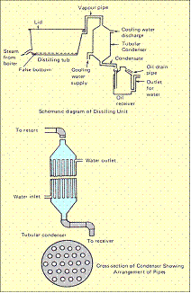

AGR 301 :: Lecture 19 :: LEMONGRASS)

Area under cultivation
At present it is grown on northern districts of Travancore and Cochin, Assam, Maharashtra and parts of Uttar Pradesh.
Botanical Name: Cymbopogon flexuosus and Cymbopogon citrutus
Family: Poaceae
Plant distribution:
It is a perennial grass about 2 to 3m tall with profuse tillering habit having linear lanceolate leaves. The inflorescence is a highly branched terminal panicle.
Centre of Origin: India
Soil
It flourishes on a wide variety of soils ranging from loam to poor laterite with best growth on welldrained sandy-loam soil.
Climate
The ideal elevation for commercial cultivation ranges from sea level to 300m. However in Kerala, it grows well at altitudes between 900 and 1200m, generally on poor soils along with hillslopes. Lemongrass requires warm and humid climate with sufficient sunshine and rainfall, ranging from 250-300 cm, uniformly distributed throughout the year. In the hilly areas of Kerala receiving heavy rainfall, the plant grows luxuriantly and is harvested more frequently but the oil and citral content are less as compared to the plants growing in the regions of less rainfall. Temperature range of 10-330C and sunshine is conducive to the development of oil in the plant.
Varieties
Sugandhi (OD 19)
It is adapted to a wide range of soil and climatic condition. A red stemmed variety with plant height 1 to 1.75 m and profuse tillering. The oil yield ranges from 80 to 100 kg per hectare with 85-88 per cent citral under rain-fed conditions. Aromatic and Medicinal Plants Research Station, Odakkali, Kerala released this variety.
Pragati (LS48)
It is a tall growing variety with dark purple leaf sheath suitable for north Indian Plains and Tarai belt of subtropical and tropical climate. Average oil content is 0.63 per cent with 86 per cent. This variety is a clonal selection from OD19 developed at Central Institute of Medicinal and Aromatic Plants, Lucknow.
Praman (Clone 29)
Evolved through clonal selection at Central Institute of Medicinal and Aromatic Plants, Lucknow and belong to species C. pendulus. It is a medium sized variety with erect leaves and profuse tillering. The oil yield is high with 82 per cent citral.
RRL 16
Average yield of this variety is 15 to 20 tonnes/hectare/annum giving 100 to 110 kg oil. Oil content varies from 0.6 to 0.8 per cent with 80 per cent citral. Evolved from C. pendulus and released for cultivation from Regional Research Laboratory, Jammu as Jammu Lemongrass.
CKP 25
A hybrid between C.khasianum X C.pendulus. Gives 60 t/ha herbage
Propagation
By Seeds
The common method employed in Kerala State is from seeds. The crop flowers during November-December and seeds are collected during January-February. For collection of seeds, the plants are left without harvest as the yield of seeds from plants subjected to regular harvest is less. On an average, a healthy plant gives about 100-200 g of seeds. At the time of seed collection, the whole inflorescence is cut and spread in the sun for drying for 2-3 days. These are then thrashed and seeds are again dried in the sin. These are finally stored in gunny bags. The seeds lose their viability if stored for a longer period
Raising of Seedlings in Nursery
It is advantageous to raise the plantation through transplanting of seedlings whenever there is assured source of water. The transplanting of nursery raised seedlings is found to be superior to direct sowing of seeds. The seeds are sown by hand on well prepared raised beds of 1m to 1.5m width at the onset of monsoon and are covered with thin layer of soil. Recommended seed rate is 3-4kg/ha. The bed should be watered immediately after sowing and care should be taken to maintain adequate moisture in the soil. Seed germinates in 5-6 days and the seedlings are ready for transplanting at the age of 60 days.
By Rooted Slips
For better quality and yield of oil it is recommended to grow lemon grass by slips obtained by dividing well-grown clumps. Tops of clumps are cut off within 20-25 cm of the root. The latter is divided into slips and the lower brown sheath is removed to expose young roots.
Planting
Seedlings are planted at a distance of 45 cm in rows, 60 cm apart. It is better to plant on ridges in areas receiving high rainfall. In case of rooted slips one or two slips are placed into each hole, about 15 cm deep. Deeper planting is dangerous as the plants may develop root-rot during the rainy season. Slips are transplanted firmly into the ground. This is done at the beginning of the rainy season. In northern India, planting by slips may be done in February if irrigation is available. In such cases, field is irrigated immediately after planting.
Irrigation
Lemongrass has a high water requirement and frequent irrigations are essential for getting optimum yield in those areas where rainfall is restricted only to the monsoon. In northern India, 4-5 irrigations are required during February- June. As the plant cannot withstand any amount of water-logging, planting on ridges or open hill slopes is recommended.
Manuring & Fertilization
It is recommended to apply 30 kg nitrogen, 30 kg P O and 30 kg K O per ha basal dose at the time of 2 5 2 planting. Remaining nitrogen (60 kg) can be applied as top-dressing in 3 split doses during the growing season. In soils having low fertility levels, the dose of nitrogen should be increased.
Intercultural Operations
Weed Control
Weeding and hoeing are very important as they affected the yield and quality of oil. Generally, 2-3 weedings are necessary during the year. In row-planted crops, inter-operations can be done by a tractor-drawn cultivator or hand-hoe. Distillation waste of this crop applied as organic mulch @ 3 tonnes/ha is found effective for controlling weeds in the crop. Among herbicides, Diuron @ 1.5 kg ai/ha and Oxyfluorfen @ 0.5 kg ai/ha are effective for weed control. Lemongrass has been found to be a weed smoothing crop. After it is established, it may inhibit weeds.
Intercropping
The plant does not tolerate shade and oil yields were drastically reduced when the crop is grown under diffused light. However, intercropping of lemon grass in regularly pruned cinnamon plantation and newly planted cashew fields during initial 4-5 years is being widely practiced.
Harvesting
The time of harvesting affects the yield and quality of the oil. The first harvest is generally obtained after 4 to 6 months of transplanting. Subsequent harvests take place at intervals of 50-60 days depending upon the fertility of the soil and seasonal factors. Under normal conditions, 2-3 harvests are possible during the first year and 3-4 in subsequent years, depending on the management practices followed. Harvesting is done with the help of sickles, the plants being cut close to their bases about 10 cm above ground-level.
Yield
Depending upon soil and climatic conditions, plantation lasts on an average, for six years. The yield of oil is less during the first year. It increases in the second year and reaches a maximum in the third and fourth years, after which it declines. For economy, the plantation is maintained only for six years. On an average, 25 to 30 tonnes of fresh herbage are harvested per hectare per annum from 4 to 5 cuttings, which yields about 80 kg of oil. Under irrigated conditions an oil yield up to 150 kg/ha has been recorded. The percentage yield based on fresh weight varies between 0.2 to 0.4
Uses
In India, oil of lemongrass is primarily used for the isolation of citral for manufacturing Vitamin-A. Citral is the starting material for the manufacture of ionones and is also used in flowers, cosmetics and perfumes. A small amount of oil is used, as such in soaps, detergents and other preparations. The spent lemongrass is suitable for making paper. It is also used as fuel for the distillation of the grass. It is an excellent source of manure. It is applied either after composting or in the form of ash by burning. It may be used for mulching coffee. It is a good crop for checking soil erosion.
Post Harvest Technology
Distillation
The grass is either distilled afresh or is allowed to wilt for 24 hours. Wilting reduces the moisture content and allows a larger quantity of grass to be packed into the still, thus economizing the fuel use. The current method of distillation adopted in Kerala is primitive and obsolete and gives oil of poor quality, as it is based on hydro-distillation or direct-fired still. For good quality oil, it is advisable to adopt steam-distillation. The equipment for distillation consists of a boiler to produce steam, a distillation tub, a condenser and one to three separators. The distillation tub is made of mild steel and has a perforated bottom, on which the grass rests. The tub has a steam inlet pipe at the bottom. A removable lid is fitted on to the top. Charging and discharging can be done in perforated cages with iron chains, which can be lowered in the tub with the help of a chain- pulley block. Different types of condensers are available, but tubular condensers are better than others. The condenser is provided with an inlet and outlet by means of which cold water is made to flow through the chamber to cool the pipes when the distillate flows through them. To obtain the maximum yield of oil and to facilitate release of oil, the grass is chopped into shorter lengths. Chopping the grass has further advantages that more grass can be charged into the still and even packing is facilitated. The grass should be packed firmly as this prevents the formation of steam channels. The steam is allowed to pass into the still with a steam pressure from 18 to 32 kg in the boiler. The mixture of vapours of water and lemongrass oil passes into the condenser. As the distillation proceeds, the distillate collects in the separator. The oil being lighter than water and insoluble floats on the top of the separator and is continuously drawn off. The oil is then decanted and filtered. Small cultivators can use direct-fire stills, but in such cases, properly resigned stills should be used. These stills are provided with a boiler at the bottom of the tub. This is separated by a false bottom from the rest of the tub. Water is poured at the bottom of the tub and grass is charged in the top portion. In the still, the water does not come in contact with the grass. The oil is stored in containers, preferably of glass or well-tinned iron. Containers should completely be filled to exclude any air and protect from sunlight as they affect the citral content.
Multiple choice questions
- Botanical name of Lemon grass
a. Cymbopogon flexuosus b. Cymbopogon martini c. Plantago ovata - The centre of origin of Lemon grass is ________
a. India b. Russia c. S. Africa - Suitable soil for Lemon grass cultivation
a. Sandy loam b. Clayey loam c. Alluvial
| Download this lecture as PDF here |